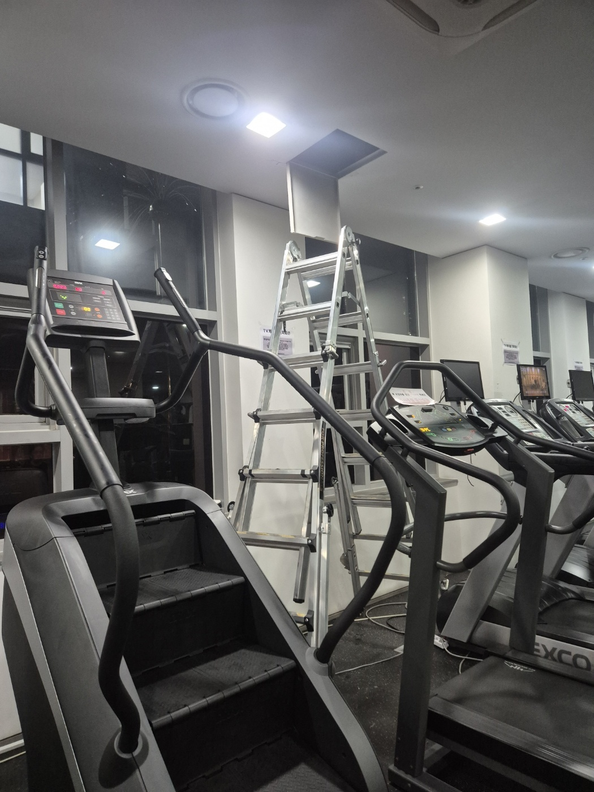
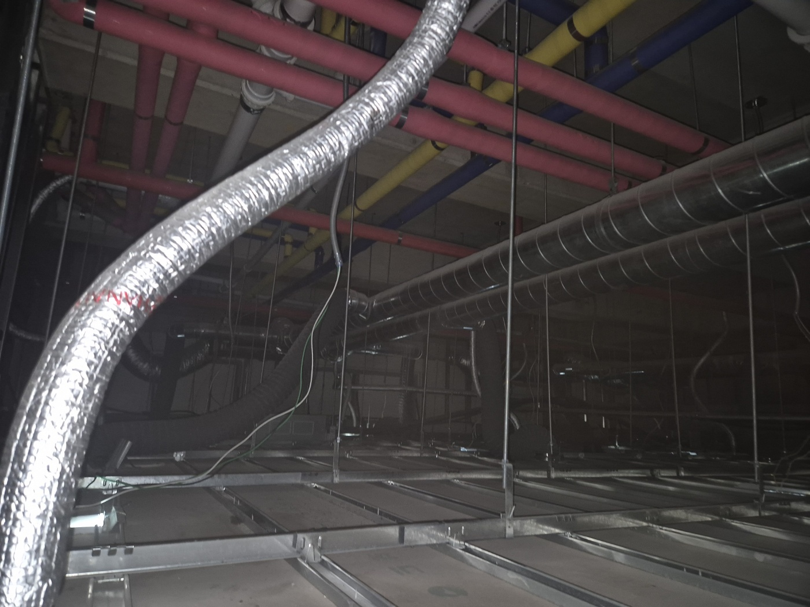
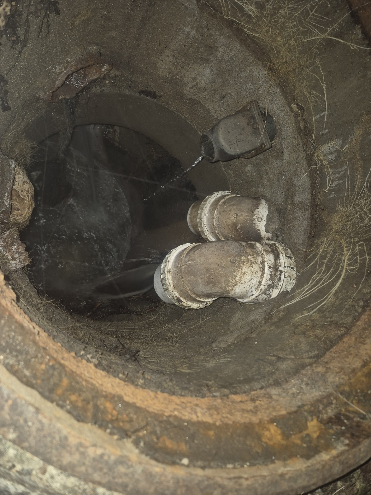
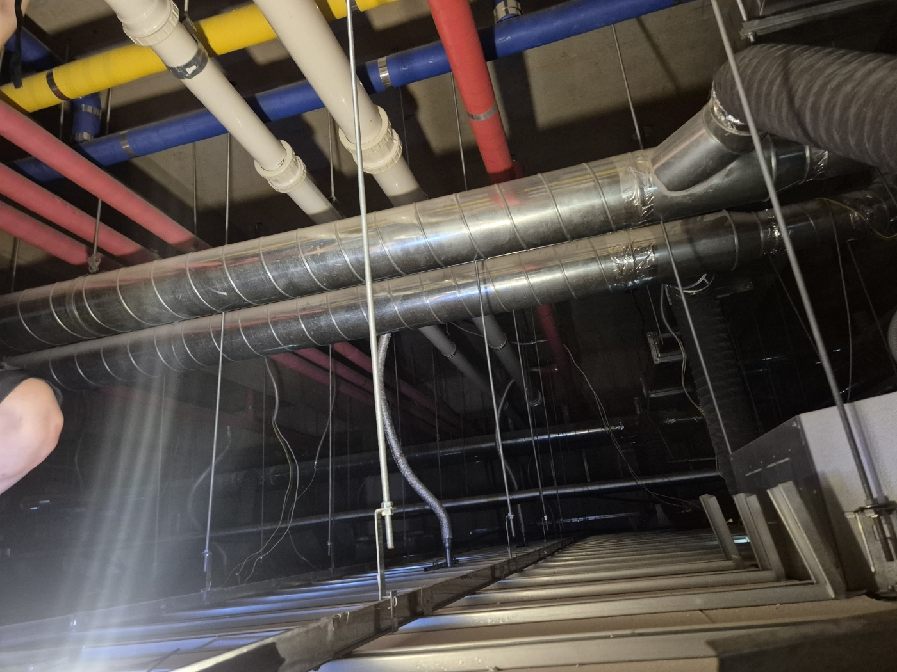
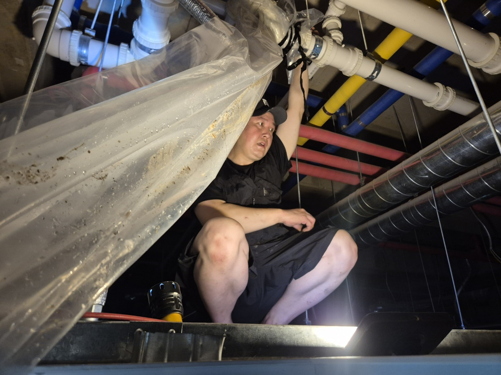
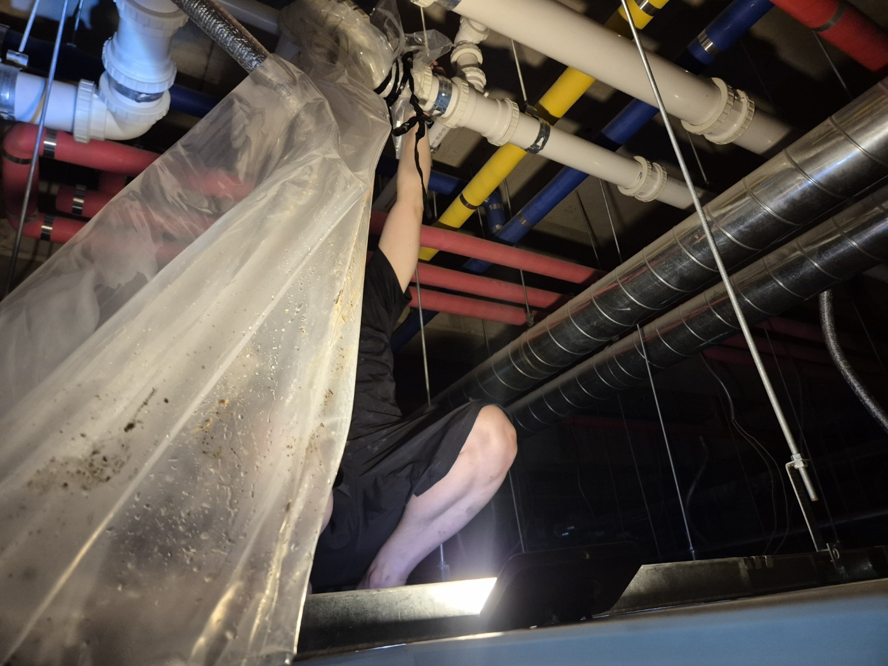
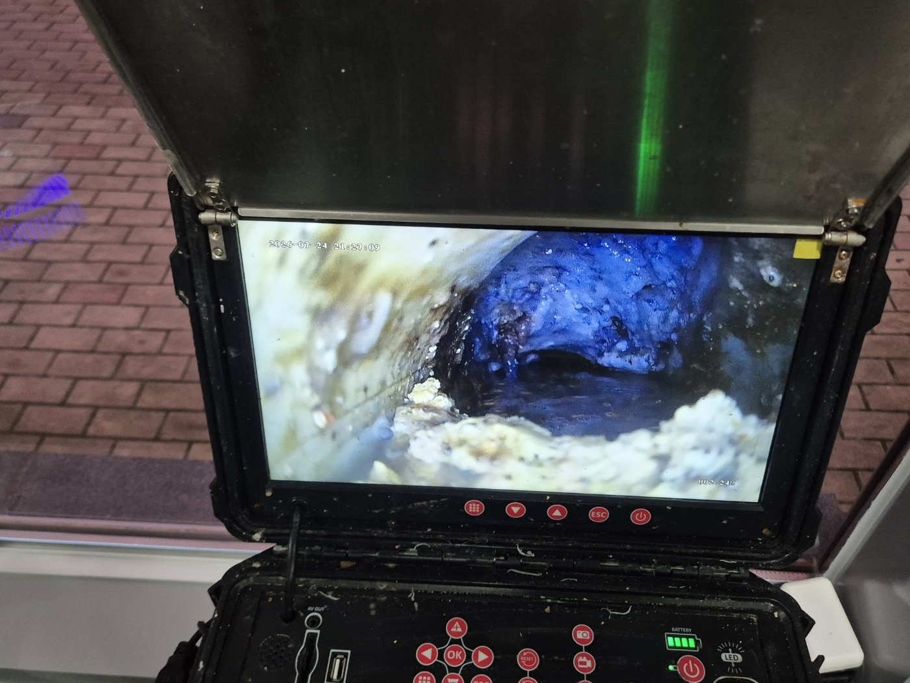
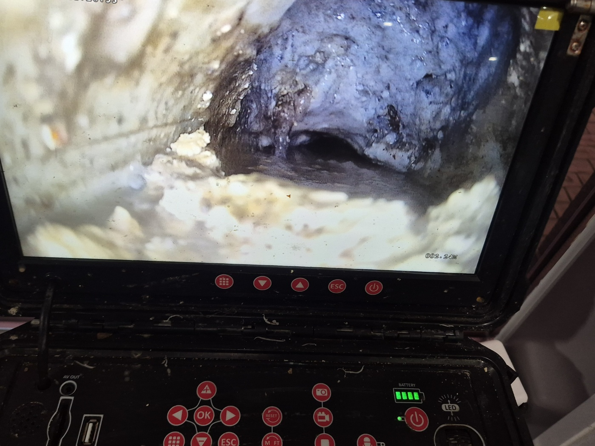

안녕하세요.. 고고고 설비입니다.. 이번에는 평택시 용이동에 있는 어린이집에서 하수구막힘 신고를 받고 출동한 현장을 소개해드릴게요. 어린이집 배관이 막혔는데, 정작 배관에 접근할 수 있는 통로는 바로 아래층인 헬스장 천장에 있었던 재미있는 현장이었습니다.
어린이집 바닥 밑 배관을 확인하려면 바로 아래층 헬스장 천장을 통해 들어가야 했어요. 러닝머신이 줄지어 있는 헬스장 한쪽에 사다리를 세우고, 천장 점검구를 열어 그 위 공간으로 올라갔습니다.

천장 속은 빛도 거의 들지 않는 좁은 공간이었어요. 빨간색 온수 배관, 파란색 냉수 배관, 노란색 배관과 큰 환기 덕트까지 어지럽게 지나가고 있어서 어린이집에서 내려오는 하수관을 찾는 것부터가 일이었습니다.

천장뿐 아니라 건물 지하 피트에 있는 배관 연결부도 함께 열어서 확인했어요. 물이 어느 정도 흐르고는 있었지만, 완전히 막힌 건 아니어도 흐름이 둔했습니다.

천장 속 좁은 공간에서 배관을 그냥 분리하면 안에 있던 오수와 찌꺼기가 사방으로 튈 수 있어서, 커넥터 주변을 비닐로 넉넉하게 감싸고 작업을 시작했습니다.

좁은 틈에 몸을 구겨넣고 유니온 피팅을 하나씩 풀어가며 분리했어요. 자세도 불편하고 공간도 좁아서 쉽지 않은 작업이었습니다.


분리한 배관 안쪽을 내시경으로 들여다보니, 벽면 전체에 하얀 기름때와 석회질 스케일이 두껍게 눌어붙어 있는 게 보였어요. 오랜 시간 조금씩 쌓인 이물질이 배관 단면을 거의 다 메우고 있었습니다.

조금 더 가까이서 보니 두께가 상당했어요. 이 정도면 시간이 지날수록 완전히 막혔을 상황이라, 바로 제거 작업에 들어갔습니다.

원인을 찾은 뒤에는 쌓여있던 기름때와 스케일을 제거하고 통수 테스트까지 마쳐서 어린이집 하수구가 다시 원활하게 흐르도록 해결해드렸습니다. 이렇게 접근이 까다로운 현장도 끝까지 원인을 찾아내는 게 저희 일이에요.
고고고 설비는 주택, 아파트, 원룸, 상가, 공장의 생활 하수 오수 배관을 관리해 주는 업체입니다. 고고고 설비에 전화 주시면 친절상담 정확한 진단 확실한 해결로 보답해 드리겠습니다!!